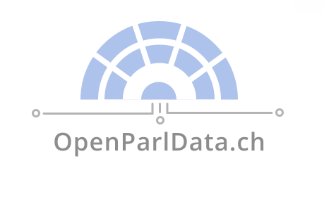
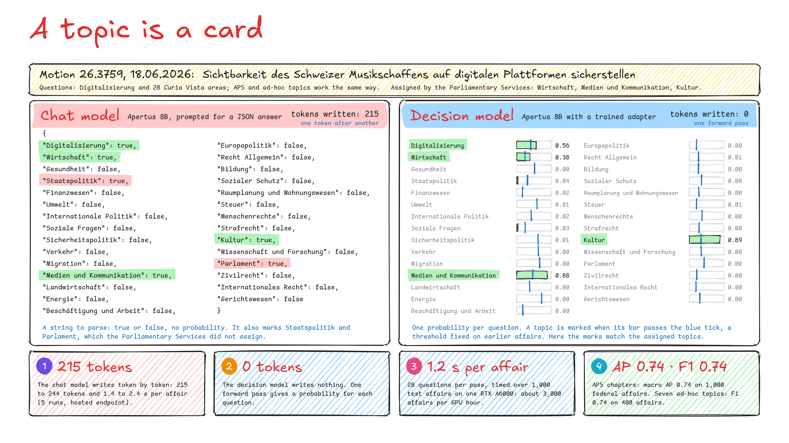

OpenParlData challenge · Liebefeld · 19 October 2026

Parlamentsthemen
Topics for every Swiss parliamentary affair, in every national language, with Apertus
Motion 26.3759
Sichtbarkeit des Schweizer Musikschaffens auf digitalen Plattformen sicherstellen
one of 318,801 affairs
Apertus-ParlTopics-8B
one probability per topic
APS chapter
Kultur, Sprache, Kirchen0.82
Invincibles
An open service that assigns standard and ad-hoc topics to the affairs in OpenParlData, shows the passage behind each suggested topic, and runs its trained Apertus model on a single GPU.
1
The Problem
Affairs from all Swiss parliaments are searchable mainly by full text, and topic labels exist only in pockets.1
OpenParlData: federal, cantonal, city
de / fr / it / rm
22%
have a topic
78% have none
Curia Vista: 28 areas (federal)
St. Gallen: 9 areas
Thurgau: 118 categories
City of Zug: 37 departments
APS: 22 chapters, 165 topics, no labels
full-text search only
every language, every word guessed
318,801affairs from 88 parliaments2
22%carry a subject area from Curia Vista or a local scheme3
4 schemesin four local parliaments, all different3
0affairs labelled with Année Politique Suisse topics supplied for the challenge4
Digital Public Services Switzerland (DVS) relies on PolitMonitor's manually assigned digitalisation tags5 and needs such affairs found across the whole dataset.
1 Challenge background: https://gitlab.com/groups/opendata.ch/openparldatach/-/wikis/Home/Future-Topics/Classification
2 OpenParlData: https://openparldata.ch; label folder: https://files.openparldata.ch/hackapertus/ 3 Counts from our cleaned snapshot: Technical report, section 4
4 Année Politique Suisse topics: https://anneepolitique.swiss/de/themen/ 5 DVS list: https://www.digital-public-services-switzerland.ch/en/news/political-activities-regarding-digitalisation
2

Interpretable by design
- One calibrated probability per topic, not a black-box label
- Topic cards in plain language: anyone can read and edit them
- Every suggestion shows the passage and the reason behind it
How we trained it: a decision model1 built with Kev2 on Apertus 1.5 8B3. 6,728 federal affairs from before 2024, with yes/no questions from Curia Vista labels (23 subject areas, 400 descriptors); a rank-16 LoRA adapter and a yes/no head on unchanged base weights; one epoch, 1 h 48 min on one A6000; per-topic Platt calibration and thresholds. APS, cantonal schemes and digitalisation: no labels used in training.
1 TypeSafe, "Introducing System One models and Jev": https://typesafe.ai/blog/introducing-system-one-models-and-jev 2 Kev: https://github.com/jaredpalmer/kev Model card: https://huggingface.co/swiss-ai/Apertus-v1.5-8B
3 Project Apertus (ETH Zurich, EPFL, CSCS), "From Open Text Models to Open Multimodal Reasoners: Apertus v1.5 Technical Report", October 2026: https://huggingface.co/papers/2610.15542
3
How the Service Runs
harrier-oss-v1-0.6b: one vector per affair, for search by meaning
318,801 affairs from 88 parliaments, export and API1
Nightly job
new and changed affairs; unchanged texts are skipped
Apertus-ParlTopics-8B
Apertus 1.5 8B2 trained as a decision model with Kev (LoRA adapter and yes/no head); every card in one pass, one probability per card, on a single GPU
Topic cards
APS chapters and topics, seven ad-hoc topics, and parliaments' own schemes (Curia Vista, St. Gallen), written once
digitalisation, climate, housing, energy security, AI, Covid-19, war in Ukraine
Untrained Apertus 1.5 8B at CSCS through the organisers' gateway: passages and reasons on request
 PostgreSQL with pgvector
decisions, vectors and reports
PostgreSQL with pgvector
decisions, vectors and reports
 search, overview, topics, reports, read-aloud
search, overview, topics, reports, read-aloud
Search page
German, French, Italian and Romansh
Docker Compose: two services,
a CPU-only image of 2.1 GB
readers; reports go back for review
affair text
topic card
vector
decision with probability
passage and reason
report
1 OpenParlData: https://openparldata.ch 2 Apertus 1.5 8B model card: https://huggingface.co/swiss-ai/Apertus-v1.5-8B
4
Results, Coverage and Comparison
APS, two levels1 No APS labels used in training
0.74
APS chapters, 1,000 federal affairs
ranking quality (AP); random: 0.15
0.66 / 0.57
APS chapters, cantonal / city affairs
agreement (F1) with Claude Opus 5.52
0.61
APS topics, second level
agreement (F1) with Claude Opus 5.5
AP: 1.0 means every right affair ranked first. F1: 1.0 means perfect agreement.
Four national languages8
Same quality in every language: German 0.71 · French 0.70 · Italian 0.70
Curia Vista macro AP on the same 871 affairs
A query in one language finds affairs in all others
Interface, search and read-aloud also in Romansh
Ad-hoc topics, no retraining
0.74
7 ad-hoc topics, 400 affairs
agreement (F1) with Claude Opus 5.5; digitalisation 0.84, climate 0.67
29 of 30
DVS-listed digitalisation affairs found3
weekly monitoring shortlist
0.70
30 new topics, each from one keyword
ranking quality (AP); random: 0.02
Housing shortage and rents902
Energy supply security664
Artificial intelligence416
Affairs labelled per ad-hoc topic, 2024 to 2026 (49,978 affairs); each topic is one card, added without retraining.
Stored decisions today
All 29 topics: 2024 to 2026 and the 30,000 most recent earlier affairs, newest first.
Backfill: about 8,000 affairs per hour on three GPUs; the remaining 239,000 affairs need about 85 GPU-hours (about 29 hours on three GPUs). New affairs: about one GPU-minute per night.
As good as a frontier model6
| Micro F1, full test sets, official labels | Claude Opus 5.5 | Apertus-ParlTopics-8B |
|---|
| St. Gallen, 868 cantonal affairs | 0.70 | 0.71 |
| Curia Vista, 1,000 federal affairs | 0.69 | 0.70 |
| APS chapters, 1,000 federal affairs | 0.62 | 0.63 |
Claude Opus 5.5: closed frontier model, size not disclosed, external API. Apertus-ParlTopics-8B: open, 8 billion parameters, runs on a single GPU. Differences within the 95% interval: level, ours ahead on every point estimate.
| System | Trained on | Digitalisation AP | Curia Vista AP (28 areas) | New scheme or topics, no labels (macro AP)7 |
|---|
| St. Gallen (new scheme) | 30 new topics |
|---|
| Legal XLM-RoBERTa (2023 study)2 | 20,000 labelled affairs, only these 28 areas, 3 epochs | 0.42 | 0.73 | no output | no output |
| Embeddings and classifier (Demokratis)4 | 20,000 labelled affairs, only these 28 areas | 0.47 | 0.74 | 0.38 | 0.39 |
| Apertus-ParlTopics-8B (ours) | 6,728 labelled affairs, 1 epoch; one model for every scheme | 0.46 | 0.71 | 0.70 | 0.70 |
| Apertus-ParlTopics-8B plus embedding classifier | as above | 0.49 (best of 23) | 0.76 (best)5 | | |
Combined with an embedding classifier, Apertus-ParlTopics-8B is the best system on both digitalisation (0.49) and Curia Vista (0.76); on its own it also handles new topics and schemes without new training.
Ahead of untrained Apertus 8B and 70B, open decision models (Kev-9B, decisio) and the 2023 legal XLM-RoBERTa on digitalisation; handles new topics and schemes without new training.
1 APS topics: https://anneepolitique.swiss/de/themen/ 2 Our evaluation, the baselines and the frontier-model judge (Claude Opus 5.5 and Claude Sonnet 5.5): Technical report, section 4
3 DVS list: https://www.digital-public-services-switzerland.ch/en/news/political-activities-regarding-digitalisation 4 Demokratis: https://github.com/Demokratis-ch/demokratis-ml
5 Comparison and blend (a logistic blend per area, fitted on earlier affairs): Technical report, section 4 6 Full frontier comparison: Technical report, section 4 8 Technical report, section 4
7 New-scheme scores: embeddings matched to the topic card text, no labels; the legal XLM-RoBERTa has no output there: it can only score the 28 areas it was trained on
5
The Pipeline: Built and What Remains
input
Nightly export and API
builtto do
Nightly Hop job
built
Skip unchanged texts
built
Embed into pgvector
built
Apertus-
ParlTopics-8Ball cards, one pass
built
Per-topic calibration
built
Store; re-score on change
builtto do
Search, API, DVS list
builtto do
Reports and reviews
to do
Recalibration behind a gate
to do
Drift and failure monitoring
card: builtvalidation: next
New topic: card, validation
only after the gate
builtruns today
to dowhat remains
dashed: not built yet1
Value
29 of 30 DVS affairs on the weekly list2
Open models, a single GPU
About one GPU-minute per night
What remains
Schedule the nightly job; finish the backfill
Review with DVS staff
Recalibration gate; drift alerts
DVS pilot: weekly shortlist
1 Pipeline status: Technical report, section 2 2 DVS list: https://www.digital-public-services-switzerland.ch/en/news/political-activities-regarding-digitalisation
7